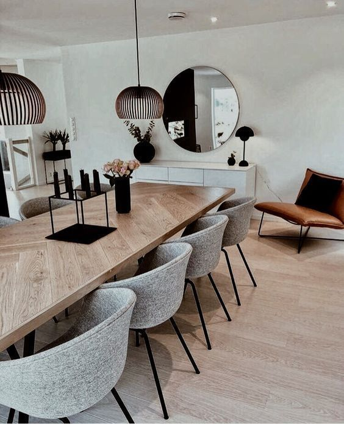
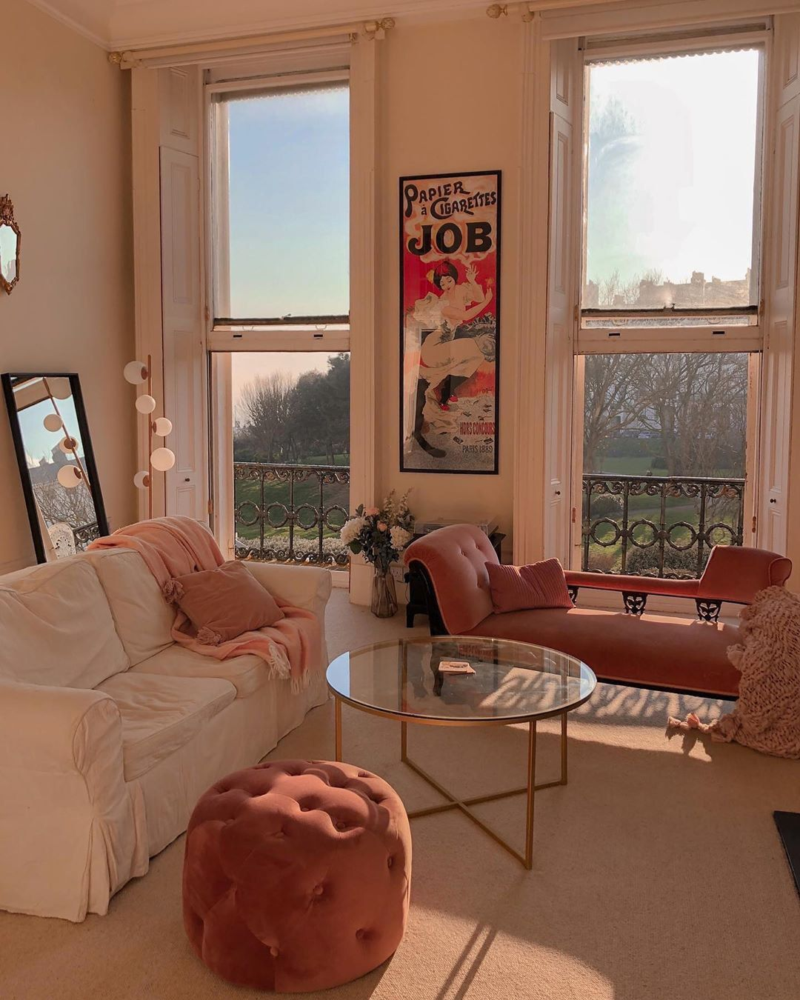
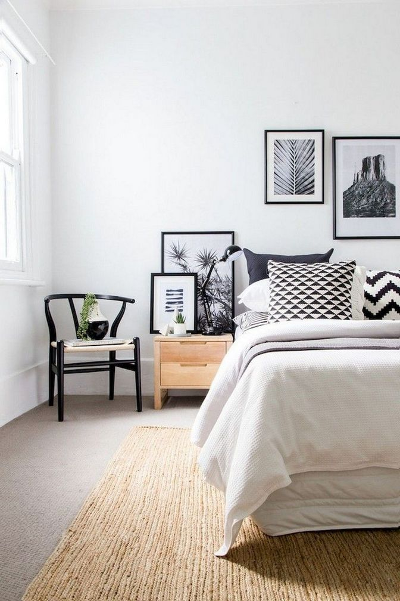

Скандинавский стиль – это дизайн в белых, бежевых и пастельных тонах, который характеризуется четырьмя основными компонентами: простотой, практичностью, строгостью линий и сдержанной элегантностью.
  Подбирайте стиль под себя!
На страницу о заботе и уходе о себе